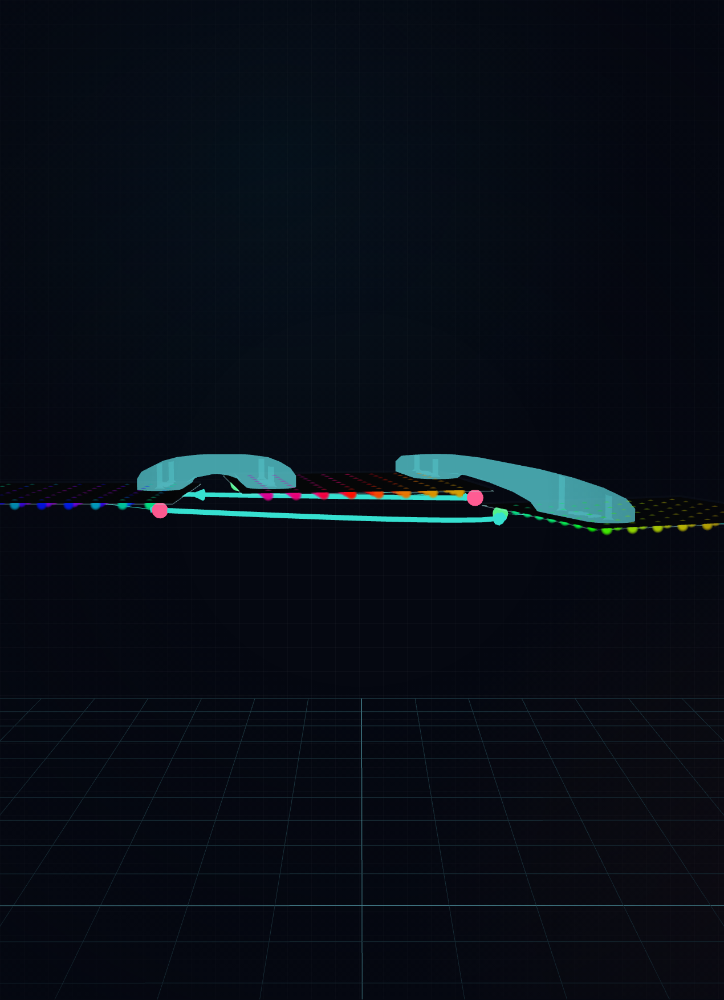
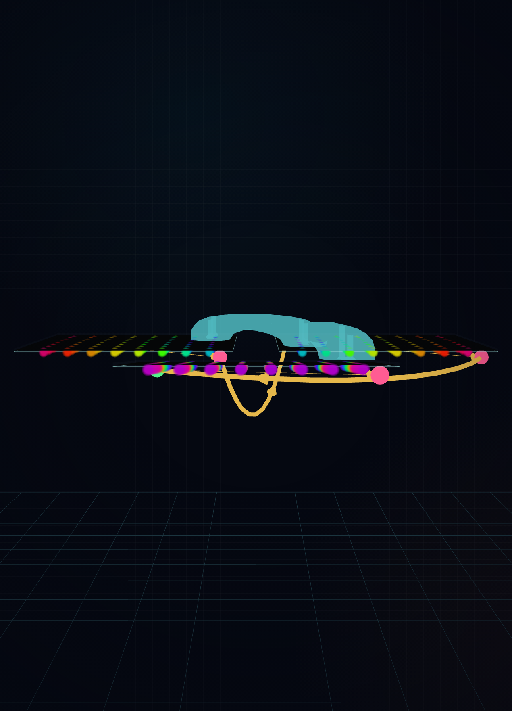
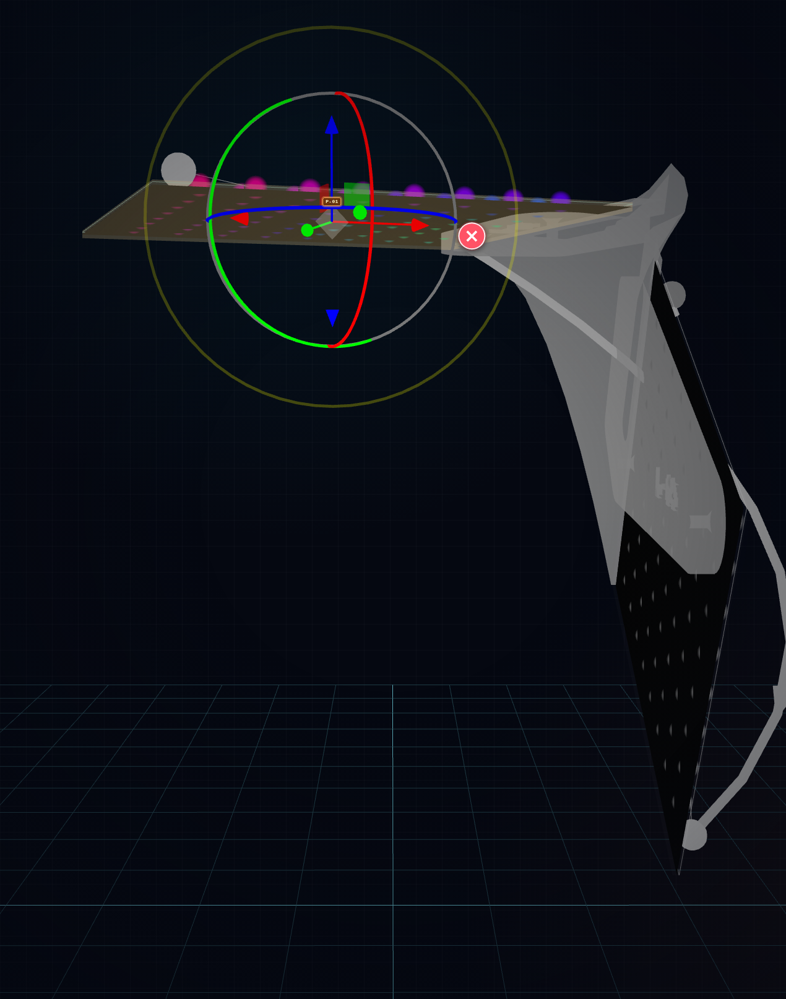
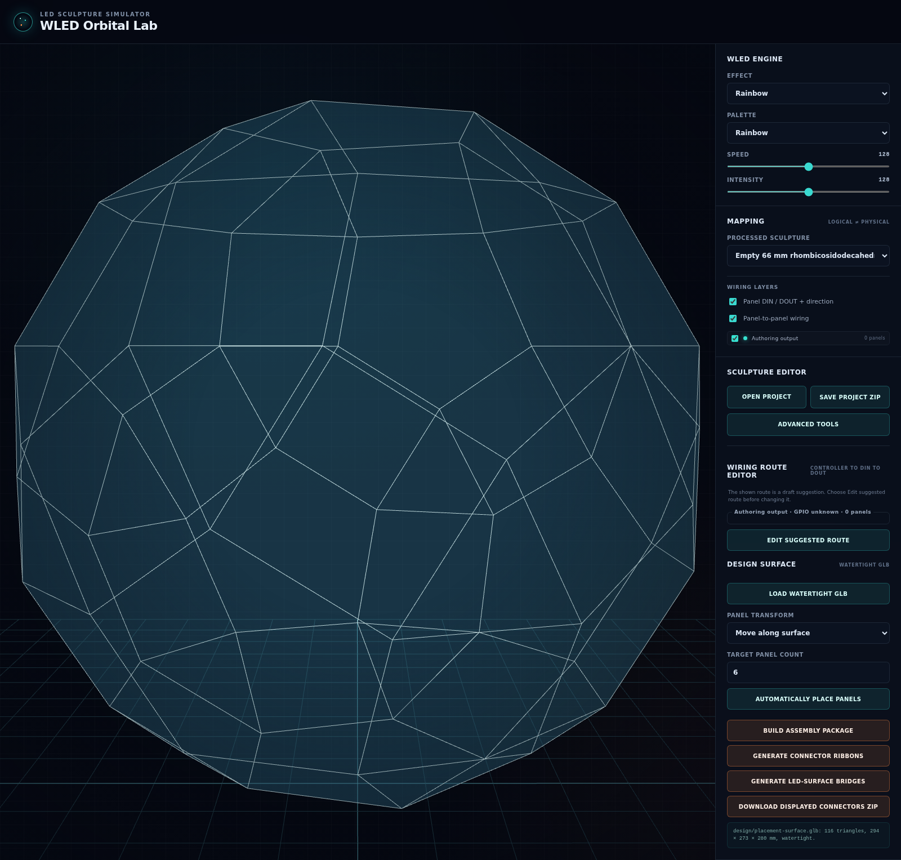

An artistic study of connector ribbons, LED-surface bridges, and the editor that made them movable.
A reconstruction from 24 design commits 22–24 August 2026 Pose-first geometry · Manifold solids · Schema 2
01 / 10
The premise
The connector began as empty space.
A panel sculpture is often described by its visible faces. This process began somewhere less stable: in the changing interval between one panel and the next.
The gap was not treated as leftover space. It became the site where structure, wiring, print logic, and visual rhythm had to agree.
Every panel already had a pose. Each pose carried a position, a local frame, and a field of LEDs. The connector could not replace that authority. It had to respond to it.
This changed the design question. The work was not “How do we model one universal bracket?” It was “What form can pass between two independent planes while respecting their screws, their electronic edges, and their light?”
The answer developed through analysis, graph logic, failed solids, local ribbons, and finally a second language that rises to the LED surface.

Two local ribbons pass through a three-panel trail. The cyan line below them is wiring, not structure. Keeping these systems visibly separate was part of the method.
02 / 10
Method
Constraint became a palette.
The process did not use freedom as the absence of limits. It used exact limits as a way to make form legible.
PosePanels remain the geometry authority. A connector follows their six degrees of freedom; it does not silently pull them into a new arrangement.
HardwareFour eligible mounting holes become anchors. DIN- and DOUT-blocked holes remain unavailable. The screw axis is both a fastening fact and a visual origin.
Measured correctionsThe printed pilot moves 0.20 mm inward from the panel edge. Material begins 0.50 mm beyond the PCB rear surface. These small facts shape the whole object.
PrintEvery body must stay watertight, connected, finite, outside PCB envelopes, and inside the selected print bed after margin and rotation.
authored panel poses
→
eligible local pairs
→
verified print surfaces
Artistic method
Stable IDs, deterministic ordering, and exact hashes sound administrative. Here they act like registration marks in printmaking. They let an iteration change without losing its identity.
Technical method
The same Schema 2 project feeds analysis, Manifold geometry, viewport display, portable ZIP output, and later physical inspection. No parallel model is allowed to become the hidden original.
The first phase built a normalized structural model, a candidate graph, a linear 3D truss solver, and a bounded optimizer. The gap appeared as nodes, axial members, supports, gravity cases, reactions, stress, displacement, and buckling.
This was useful but incomplete. A solved line is not yet a printable surface. The analysis could suggest load paths, but it could not decide the final language of touch, thickness, label, edge, or light.
4steps from structural input to optimized member field
6possible transport gravity directions plus installed gravity
0claims of engineering certification
77ec854Define material, mass, supports, loads, safety, and fabrication limits.
6c47f47Build a deterministic local candidate graph from eligible panel anchors.
413feb7Solve load cases and expose force, reaction, displacement, stress, and buckling.
20e0e6cRemove or resize members only when connectivity and hard limits survive.
b3c49a6Cross the boundary from abstract members to printable Manifold solids.
52070e2Turn exact meshes into STL, 3MF, preview, and a checked artifact set.
Analysis became a critic inside the studio, not the author of the final shape.
The later pipeline deliberately allows valid ribbon generation when advisory analysis is singular or infeasible. Geometry and analysis report their own evidence.
04 / 10
Movement II · from members to surfaces
The line thickened, then learned to bend.
bb060abReplace a sculpture-wide member field with modular, local panel-pair connectors.
4bfe97cGrow organic webs around the screw anchors.
ec27f76Replace the web with a continuous loft between panel-facing shoe profiles.
e4e04cbSeparate printable ribbon success from truss convergence.
8cb481cUnite nearby paths into one local multi-panel junction.
f8b464cRemove sub-micron Boolean slivers without weakening the strict mesh gate.
c9bb4b1Remove speculative transverse voids; keep only screw-axis pilots and lead-ins.
d03e66fEngrave the destination panel identity into the flat mounting face.

A local junction forms only when connection regions meet closely enough on a shared panel. A trail with distant regions remains two parts. Locality became both a structural and compositional rule.
Nine cap-shaped stations now guide each ribbon. A cubic path leaves each PCB only 6 mm along its rear normal, then turns into the gap.
05 / 10
Failure as material
Each rejected form clarified the object.
The global cageA connected graph can be structurally meaningful and visually totalizing. The design moved toward local cells so the sculpture remains assembled from readable encounters.
The thick wedgeA direct hull between distant profiles can become one blunt convex mass. Intermediate stations and a cubic path let the connector turn without filling the whole gap.
The speculative holeCable bores and transverse access tunnels looked helpful but lacked measured keep-out authority. They were removed. Unknown space stays protected, not decorated.
The invisible sliverBoolean overlap created tiny faces that were mathematically present but physically meaningless. A 0.001 mm simplification removes them before the strict triangle gate.
The false dependencyEarly geometry could fail because an advisory truss did not converge. The process separated these claims: analysis can remain uncertain while verified connector geometry still prints.
The stale twinA valid preview could once differ from valid downloadable parts. The final loader now proves that the displayed triangle records exactly assemble the referenced part STLs.
Failure did not merely remove defects. It reduced the design to the claims the object could honestly make.
Repository evidence: failure-learning entries and commits e4e04cb, f8b464c, c9bb4b1, plus integration review at 641cf6b.
06 / 10
Two connector languages
One fastens behind. One rises toward light.
Connector ribbonBroad 13 mm screw shoes form the ends of a twisted rear surface. The body stays close to the fastening logic and keeps a flat, labeled panel-facing region.LED-surface bridgeThe same eligible anchors support a complete-edge sheet. Its ridge reaches the LED-emitter plane and turns the gap into a continuous luminous edge condition.
Shared grammar
Both use the same poses, screw anchors, measured corrections, labels, local junction groups, PCB exclusions, Manifold checks, and print-bed limits.
Different gesture
The ribbon connects mounting faces. The bridge selects complete panel edges, samples each edge 17 times, and crosses the gap through nine cubic stations.
The second design did not replace the first. It revealed that “connection” can have more than one spatial voice.
07 / 10
The editor as studio instrument
The sculpture learned to move without losing its surface.
Surface mode keeps the original design relation. A panel moves along the active surface, or in its saved local plane when no surface exists. Rotation stays on local Z.
Free 6DOF mode exposes local XYZ translation and rotation. A completed move saves one normalized, right-handed pose and removes the old surface attachment.
The switch matters artistically. It lets one mode preserve belonging while the other permits rupture, tilt, offset, and re-composition.
f66554c → 6bb5742

Translation arrows and rotation rings surround the selected panel. The connector preview remains visible as context, but any committed pose change makes derived geometry stale until regeneration.
The gizmo is not only a control. It is a way to ask the connector a new question.
08 / 10
Iteration field
Four presets act as spatial sketches.
Two-panel spatial trialOne arbitrary gap. It is the smallest complete study of twist, edge choice, PCB clearance, and the difference between ribbon and LED-surface bridge.
Three-panel trailTwo local relationships: P-01↔P-02 and P-02↔P-03. It proves that a chain does not need a first-to-last shortcut or one global body.
Local junctionTwo paths meet near one shared panel region and become one watertight part. The design tests when multiplicity can become a single object.
Twelve-panel spiralEleven adjacent connectors follow panels that rise and rotate. It tests repetition without erasing difference, and scale without a sculpture-sized union.

The four sketches remain ordinary Schema 2 projects in the same editor. Advanced Tools holds neighbor, pair, and print-bed controls. The two generation actions remain visible as primary choices.
Connection is local. The whole sculpture does not need one structural gesture.
Exactness is expressive. A screw correction, edge plane, or protected void can generate form.
Analysis advises. It does not impersonate physical proof or engineering certification.
Display and download are one claim. The ZIP is enabled only for the exact verified connector set visible in the viewport.
Movement remains reversible. Surface guidance and free 6DOF composition coexist behind one explicit switch.
The object is not finished at the mesh. Print, fit, flex, fastening, cable clearance, and light still have to answer.
The next iteration is physical. A representative Manifold part must be printed, handled, mounted, and observed. The digital process has made its proposal. Material now gets a vote.
Current open review: HR-006. Source reconstruction: commits 77ec854..6bb5742, integrated through 641cf6b. Document created 25 August 2026.